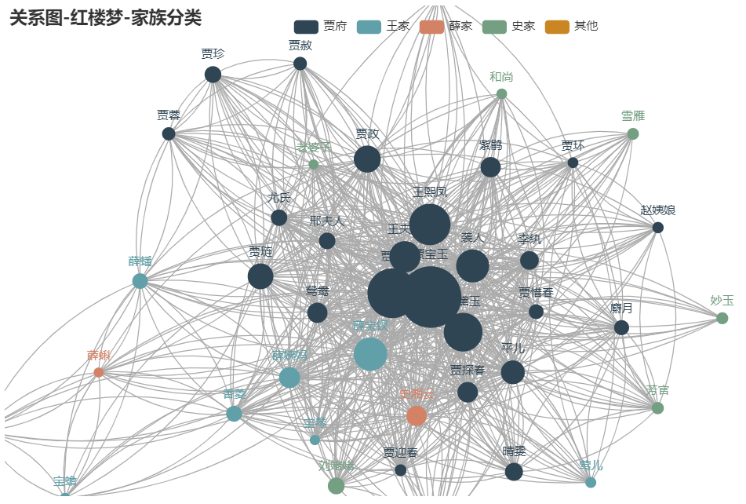
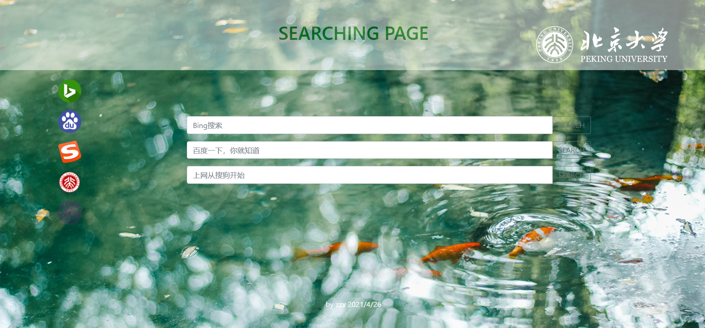
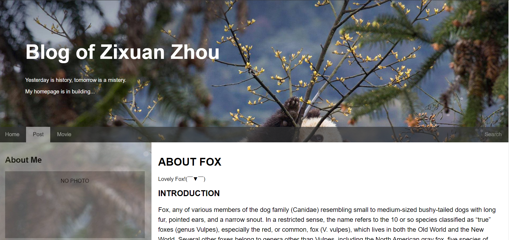

计算机思维与编程入门课程作业list
周子璇 1900012728
第三次作业
1.人物关系图
鉴于之前进行词频统计的作品不适用于人物分析，故本次换用《红楼梦》文本。基于人物“共现”进行分析，对出现次数>100的人物节点和共现次数>100的人物组生成关系图。由于各人物出现次数相差较大，故设定人物节点大小=sqrt(人物出现次数)，保持画面平衡。 人物关系图
(你可以通过点击文字链接或图片访问我的网站) 2.我的搜索引擎
用html设计网页，页面包含输入框和按钮，实现了必应搜索、百度搜索、搜狗搜索的集成搜索功能，且可以页面左端的图标（必应搜索、百度搜索、搜狗搜索、北大官网、清华官网）跳转到相应网址，方便快捷。点击本页面右上角的“SEARCH”也可快速查看我的搜索页面。 我的搜索引擎
3.“狐狸”科普
尝试使用css设计网页（比如您正在阅读的这个页面），点击下方链接或者左上角"post"可以跳转到我的第一篇blog——About Fox~
